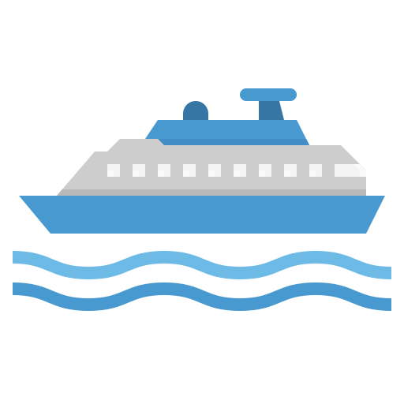

Beginnings
 Puget Sound and the many adjacent waterways, inlets, and bays form a natural transportation route for much of the western part of Washington. For navigation purposes, Puget Sound was sometimes divided into the "upper Sound" referring to the waters south of the Tacoma Narrows, and the lower sound, referring to the waters from the Tacoma Narrows north to Admiralty Inlet.The first steamboat to operate on Puget Sound was the Beaver, starting in the late 1830s. Beaver was a sidewheeler built in London, which reached the Northwest under sail, with her paddle wheels dismantled. In 1853, Hudson’s Bay Company brought a new steam-powered vessel into the area, the Otter, a propeller-driven bark.
The Native Americans traversed Puget Sound in well-built cedar canoes, as they had for thousands of years, and for some time so did the American settlers, who only began to arrive in very small numbers in 1846. In 1851, Olympia became the only formal American town on Puget Sound. In November 1851, the schooner Exact disembarked passengers at Alki Point, which was the beginning of the city of Seattle. In February 1852, three of the settlers, Arthur A. Denny, C.D. Boren, and William N. Bell, took soundings on the east side of Elliott Bay, found the water to be deep enough near the shore to form a port, and staked land claims along the water.
The first American steamboat on Puget Sound was the sidewheeler Fairy built in San Francisco in 1852. Captain Warren Gove, born in Edgecomb, Maine, in 1816 (one of three Gove brothers involved in early maritime affairs) brought Fairy to Puget Sound on the deck of the bark Sarah Warren and lowered her into the sound on October 31, 1853. Fairy was the first steamboat on Puget Sound to have a formal schedule, published for the first time on November 12, 1853, in the Columbian newspaper of Olympia. The "splendid steamer" Fairy, as she was advertised, was supposed to make two trips a week between Olympia and Steilacoom, and one trip a week from Olympia to Seattle. Fares were high, $5 for Olympia-Steilacoom, and $10 for Olympia-Seattle. Fairy, however, proved unseaworthy in the rougher winter weather in the lower sound, and after a few runs from Olympia to the then small village of Seattle was eventually replaced by a sailing schooner, which ran irregularly and, more predictably, by mail and passenger canoes. These were owned and crewed by the First Nations. In those days, at least two days and often three were needed to make the trip from Seattle to Olympia, and travellers camped on the beach at night. (Following her failure on the upper sound, Fairy was placed on the much shorter Olympia-Fort Steilacoom run, until 1857, when her boiler exploded. No one was killed, but that was the end of her. 0–11 )
The next steamboat on the Sound was the Major Tompkins, which arrived on September 16, 1854. Tompkins (151 tons and 97 ft or 29.57 m long) was an iron-hulled steamer with a propeller, built at Philadelphia in 1847, and somehow brought around South America to California, where she had collected gold from gold seekers during the great California gold rush. Paid off by her California competitors in a typical monopolistic deal of the era, Major Tomkins was sitting idle at the dock in San Francisco in 1854 when she was bought by Capt. James M. Hunt and John M. Scranton, who brought her north to Puget Sound. Once she arrived, the Pumpkins, as the locals called her, made her very slow way (about 5 miles per hour) among Olympia, Seattle, Victoria, and other places, carrying mail, freight, and passengers. Pumpkins was lost at Victoria, blown ashore in a squall following a mistake in navigation; all aboard reached safety in a narrow escape.